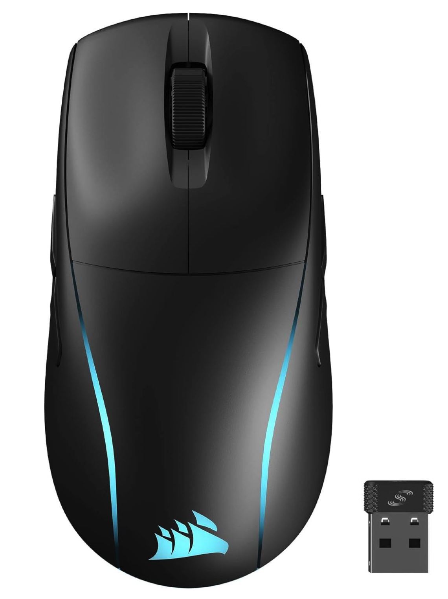

5

Corsair M75 Wireless
En alsidig gaming mus til dig, der vil have samme knapsæt på begge sider uden at gå på kompromis med ydeevnen. M75 Wireless er bygget omkring Corsairs præcise optiske sensor med lav latenstid, så den føles konsekvent i alt fra taktiske skydespil til MOBA’er. Vægten er moderat og formen neutral, hvilket gør den let at anbefale til mange grebstyper og håndstørrelser – særligt hvis du skifter mellem højre og venstre hånd eller vil kunne mappe ekstra sideknapper symmetrisk. Softwaren er enkel at arbejde i med tydelig makro- og DPI-styring, og batteritiden rækker komfortabelt til lange sessioner. Foruden det, så har den et virkelig lækkert design, hvilket let kan matches til dit setups' LED lys.
Specifikationer
- Sensor: Optisk, op til ~26.000 DPI
- Polling: Op til 2.000 Hz trådløst (understøttet)
- Vægt: 89 g
- Form: Ambidextrous (knapper på begge sider)
- Switches: Optiske
- Forbindelser: 2.4 GHz, Bluetooth, USB-C
Fordele
- Ægte ambi-design med fire sideknapper
- Stabil trådløs præstation og god batteritid
- Behagelig allround-form for mange greb
Ulemper
- Højere vægt end de letteste konkurrenter
- Sensor og skaller ikke lige så “esports-trimmet” som topmodellerne